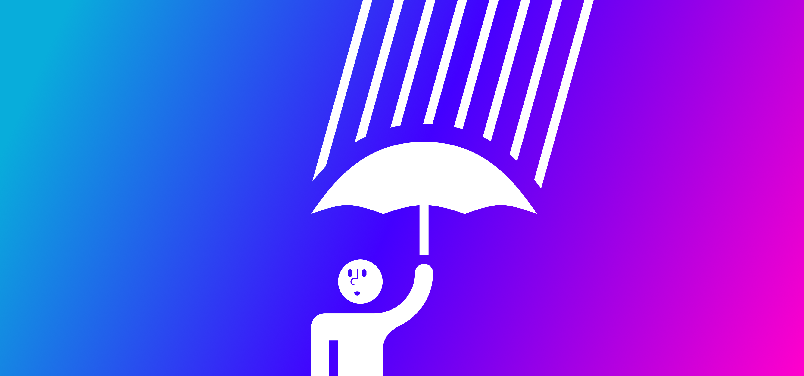

One idea that could curb harassment on social media

I have an idea about how to help people being harassed, and it’s about how people get and manage their replies.
This idea is more of an umbrella in a shitstorm. It’s a short-term solution that helps us stay dry while we try to get indoors to safety.
How we can filter replies #
The core of this idea is that anyone could mention you, share or like your updates, but you don’t see every reply. They’re not always visible because you’ve got a filter that’s hiding certain replies.
How it works: you specify which types of replies get through (we’ll get to that in a moment), and the rest go to an “other” reply screen which can totally be ignored.
Here’s what that could look like:
Friends only #

You’ve got a public account and people can see your posts. But you only see interactions from people you’ve approved.
Anyone can request permission to interact with you. Those requests are ranked by who’s in your contacts. So, if a friend you know wants to come hang out with you: cool, they’re at the top of the request list so you don’t miss them.
Friends of friends #

This allows for a little more exposure. You’re good at choosing friends, and you figure that your friends are, too. So they can totally interact with you.
Verified accounts only #

This is relatively new and pretty interesting. Twitter just opened up public registration for verified accounts, and it could have some interesting repercussions later on down the line.
On Twitter, you could opt into allowing replies from everyone who’s verified their account. This means they’re effectively taking responsibility for what they’re saying and doing online, and screwing up could mean their account gets suspended, banned, or they’ve got some other action taken against them. I think this could help everyone and make a serious dent in who experiences harassment in their replies.
Drawbacks
There’s a drawback to this approach: some people want to keep their information private and may not want to verify their accounts. And that’s totally their prerogative.
If a you enable this feature, your engagements could decrease. If you’re the social network, you care about this. If you’re a human who’s getting harassed, you care, like, none percent about this.
I’d argue that just as it’s your right to keep your information private and not have your account verified, it’d also be another person’s right to only allow replies from verified users.
I say that because some want Twitter to be like a backyard bbq where they hang out with just their friends (and maybe have other people looking on as spectators). Some want Twitter to be a completely open space where any opinion should be able to fly. Still others want a more measured experience. Why can’t we have people opting into whichever one fits them best?
Other ideas that need work #

One of my favorite Twitter clients, Tweetbot, allows me to mute things. And I mute a lot. I wonder how it could factor into this solution.
Word-based filters are easy to circumvent. They also disallow legitimate uses of certain words and mostly amount to an arms race — see the billions of spam emails people get about how great v1@gr@ is.
Perhaps we could utilize machine learning to look for variants of those words and understand the context of a message. If we’re going back to the idea of who you let interact with you, we could limit use of those words to your friends.
Yeah, but free speech! #

I don’t want to retread all those arguments here, but mostly my thoughts align with this Xkcd comic. In short, I think that if what’s being said is deliberately hateful or harassing, it shouldn’t ever be permitted.
I think what’s helpful about filtering replies allows for a level of discourse you’re comfortable with. It also lets most other conversations go on unaffected.
It’s fair to argue that this doesn’t solve the root of the problem: people are still saying and doing terrible things, which have terrible consequences for those on the receiving end. I’d love to dive into that issue and tackle it, but it’s tremendously complex and there’s no way one post could solve it.
Closing thoughts #

Harassment is a tricky one to solve, particularly if your network is built in such a way that doesn’t have the guardrails in place to inhibit it from the start. Fixing harassment is more than could be discussed in one single post, and should be the ultimate long-term goal.
I don’t know what that solution looks like exactly, but I do know we need to build safeguards and a community of people that don’t tolerate harassment. Whatever that solution is, I’d love to be a part of it.
Surprise by Danil Polshin, Speech Bubble by Anna Stem from the Noun Project